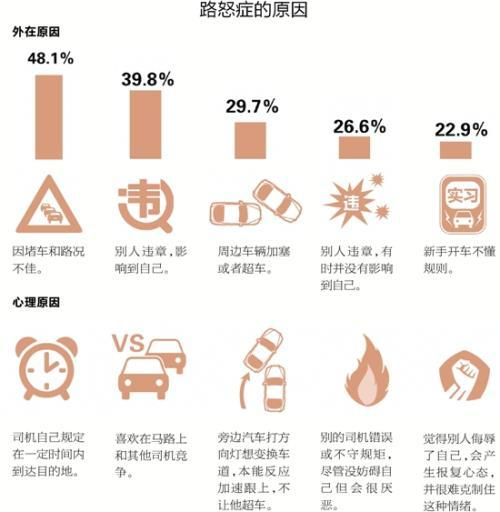

原因

那么，是什么会让我们产生“路怒症”呢？后车跟车太近、在繁忙的高速公路上被强行超车、看到有人猛冲过几条车道、开车打电话，或是在我们面前的路上占道等等，这些都是可能让我们感到压力的情况。停车如何？在最后一刻别人抢走了我们想要的车位，可能会把我们逼疯！意识到什么可以引发这些愤怒情绪或许是控制愤怒情绪的关键。
So, what can cause us to experience road rage? Being tailgated, undertaken on a busy motorway, seeing someone swooping across several lanes, chatting on their phone, or hogging the middle lane in front of us are just some of the things that may stress us. And what about parking? Someone stealing the space we wanted at the last second could tip us over the edge! Being aware of what can trigger these feelings of rage may be key to controlling it.